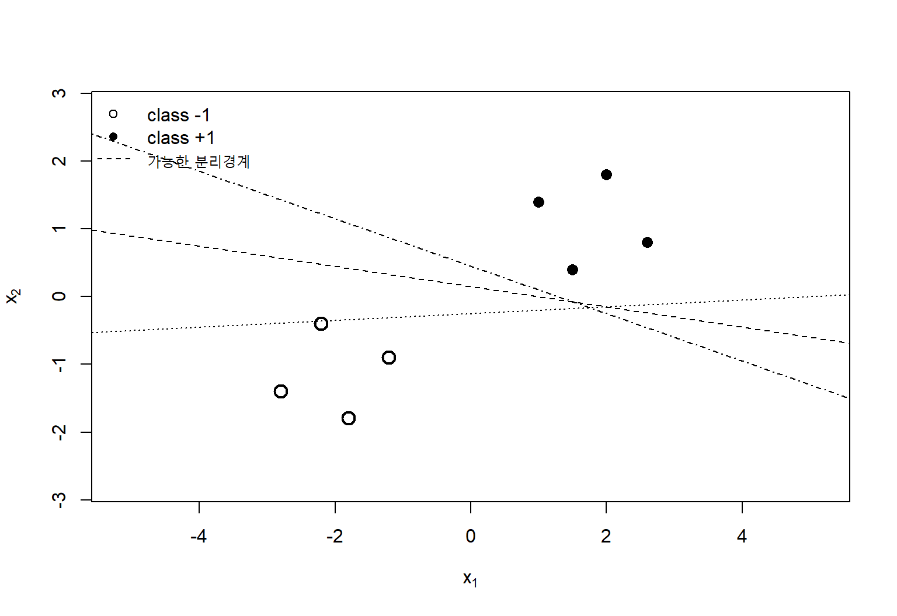
6 서포트 벡터 머신
서포트 벡터 머신(support vector machine, SVM)은 분류경계를 단순히 자료를 구분하는 초평면으로 찾지 않고, 두 클래스 사이의 마진을 최대화하는 최적화문제로 구성한다. 이 관점은 분류문제를 기하학, 볼록최적화, 일반화이론과 커널방법으로 연결한다. 선형분리가 가능한 경우에는 가장 넓은 여유공간을 갖는 초평면을 선택하고, 선형분리가 불가능한 경우에는 일부 관측값의 마진 위반을 허용하면서 모형복잡도와 훈련오차를 동시에 조절한다.
이진분류 자료를
\[ \mathcal D = \{(\mathbf x_i,y_i)\}_{i=1}^{n}, \qquad \mathbf x_i\in\mathbb R^p, \qquad y_i\in\{-1,+1\} \tag{6.1}\]
라고 하자. 선형 SVM의 판별함수(decision function)는
\[ f(\mathbf x) = \mathbf w^\top\mathbf x+b \tag{6.2}\]
이고 예측 클래스는
\[ \widehat y = \operatorname{sign}\{f(\mathbf x)\} \tag{6.3}\]
로 정의한다. 벡터 \(\mathbf w\)는 초평면의 법선벡터(normal vector)이고 \(b\)는 절편이다. 결정경계는 \(f(\mathbf x)=0\)인 점들의 집합이다.
중요서포트 벡터 머신의 핵심 관점
SVM은 네 관점에서 이해할 수 있다. 첫째, 두 클래스 사이의 기하학적 마진(geometric margin)을 최대화하는 분류기이다. 둘째, 볼록목적함수와 제약조건을 갖는 최적화문제이다. 셋째, 쌍대문제(dual problem)를 통해 관측값 사이의 내적만으로 학습할 수 있는 커널방법이다. 넷째, 결정경계를 규정하는 일부 관측값인 서포트 벡터에 의존하는 희소한 예측모형이다.
6.1 마진과 서포트 벡터
6.1.1 분리 초평면(separating hyperplane)
\(p\)차원 입력공간에서 선형 결정경계는
\[ \mathcal H_0 = \{\mathbf x:\mathbf w^\top\mathbf x+b=0\} \tag{6.4}\]
인 \((p-1)\)차원 초평면이다. \(f(\mathbf x)>0\)인 반공간은 \(+1\) 클래스로, \(f(\mathbf x)<0\)인 반공간은 \(-1\) 클래스로 분류한다.
선형분리 가능성(linear separability)은 어떤 \((\mathbf w,b)\)가 존재하여 모든 관측값을 하나의 초평면으로 구분할 수 있는 성질이다. 구체적으로 주어진 자료가 선형분리 가능하다는 것은 어떤 \((\mathbf w,b)\)가 존재하여 모든 \(i\)에 대해
\[ y_i\{\mathbf w^\top\mathbf x_i+b\}>0 \tag{6.5}\]
이 성립한다는 뜻이다. 같은 자료를 완벽하게 분리하는 초평면은 여러 개일 수 있다. SVM은 그중에서 두 클래스에 가장 가까운 관측값까지의 거리가 최대가 되는 초평면을 선택한다.
6.1.2 초평면까지의 거리
점 \(\mathbf x\)에서 초평면 \(\mathcal H_0\)까지의 수직거리는
\[ d(\mathbf x,\mathcal H_0) = \frac{|\mathbf w^\top\mathbf x+b|}{\|\mathbf w\|_2} \tag{6.6}\]
이다. \(\mathbf w\)와 \(b\)에 같은 양의 상수 \(c\)를 곱해도 결정경계는 변하지 않는다.
\[ \operatorname{sign}\{\mathbf w^\top\mathbf x+b\} = \operatorname{sign}\{c\mathbf w^\top\mathbf x+cb\} \tag{6.7}\]
따라서 판별함수의 절댓값 자체는 스케일에 의존하지만, \(\|\mathbf w\|_2\)로 나눈 거리는 스케일에 불변이다.
6.1.3 함수적 마진
관측값 \((\mathbf x_i,y_i)\)의 함수적 마진(functional margin)은
\[ \widehat\gamma_i = y_i\{\mathbf w^\top\mathbf x_i+b\} \tag{6.8}\]
로 정의한다. \(\widehat\gamma_i>0\)이면 올바르게 분류되고, \(\widehat\gamma_i<0\)이면 잘못 분류된다. 전체 자료의 함수적 마진은 가장 작은 개별 마진이다.
\[ \widehat\gamma = \min_{1\le i\le n} y_i\{\mathbf w^\top\mathbf x_i+b\} \tag{6.9}\]
함수적 마진은 \((\mathbf w,b)\)의 스케일에 따라 임의로 커질 수 있으므로 그 자체로는 기하학적 여유공간을 측정하지 못한다.
6.1.4 기하학적 마진
개별 관측값의 부호를 포함한 기하학적 마진은
\[ \gamma_i = \frac{y_i\{\mathbf w^\top\mathbf x_i+b\}}{\|\mathbf w\|_2} \tag{6.10}\]
이고 자료 전체의 기하학적 마진은
\[ \gamma = \min_i \frac{y_i\{\mathbf w^\top\mathbf x_i+b\}}{\|\mathbf w\|_2} \tag{6.11}\]
이다. 기하학적 마진은 결정경계와 가장 가까운 관측값 사이의 부호 있는 거리이다. SVM은 이 값을 최대화한다.
6.1.5 정규화된 표현
선형분리 가능한 자료에서 \((\mathbf w,b)\)의 스케일을 조정하여 가장 가까운 관측값이
\[ \min_i y_i\{\mathbf w^\top\mathbf x_i+b\}=1 \tag{6.12}\]
을 만족하도록 할 수 있다. 그러면 두 마진 경계(margin boundary)는
\[ \mathbf w^\top\mathbf x+b=1, \qquad \mathbf w^\top\mathbf x+b=-1 \tag{6.13}\]
이고 각 경계에서 중앙 결정경계까지의 거리는
\[ \frac{1}{\|\mathbf w\|_2} \tag{6.14}\]
이다. 두 마진 경계 사이의 전체 폭은
\[ \frac{2}{\|\mathbf w\|_2} \tag{6.15}\]
이다. 따라서 마진을 최대화하는 것은 \(\|\mathbf w\|_2\)를 최소화하는 것과 같다.
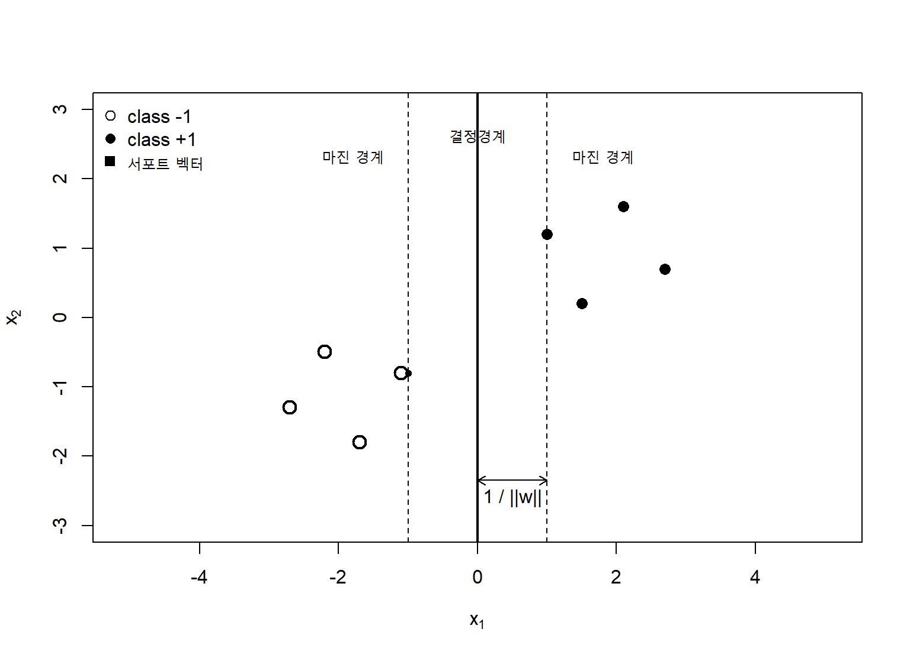
6.1.6 하드 마진 SVM의 원문제
정규화된 표현을 사용하면 하드 마진(hard margin) SVM은 다음 볼록 이차계획법으로 정의된다.
\[ \begin{aligned} \min_{\mathbf w,b}\quad & \frac{1}{2}\|\mathbf w\|_2^2\\ \text{subject to}\quad & y_i(\mathbf w^\top\mathbf x_i+b)\ge 1, \qquad i=1,\ldots,n. \end{aligned} \tag{6.16}\]
목적함수는 \(\mathbf w\)에 대해 엄격히 볼록하고 제약조건은 선형이다. 실행가능한 해가 존재하면 최적 초평면은 본질적으로 유일하다. 절편 \(b\)는 특정 퇴화상황에서 유일하지 않을 수 있지만 예측경계는 동일하다.
6.1.7 서포트 벡터
최적해 \((\widehat{\mathbf w},\widehat b)\)에서
\[ y_i(\widehat{\mathbf w}^\top\mathbf x_i+\widehat b)=1 \tag{6.17}\]
을 만족하는 관측값을 서포트 벡터라고 한다. 이들은 마진 경계 위에 있으며 결정경계의 위치를 직접 규정한다. 마진 밖에 충분히 멀리 있는 관측값은 작은 변화가 생겨도 최적경계에 영향을 주지 않을 수 있다.
노트왜 일부 관측값만 중요한가
SVM의 최적 초평면은 전체 관측값의 평균적 위치보다 경계에 가장 가까운 관측값에 의해 결정된다. 이 때문에 학습된 모형은 서포트 벡터에 대한 계수만을 저장하는 희소표현을 갖는다. 다만 서포트 벡터가 지나치게 많다면 예측비용과 과적합 가능성이 함께 증가할 수 있다.
6.1.8 최대 마진과 일반화
반지름-마진 비율(radius-margin ratio)은 자료의 범위와 분류 마진을 함께 사용해 유효복잡도를 해석하는 관점이다. 마진이 크다는 것은 훈련관측값이 결정경계에서 멀리 떨어져 있다는 뜻이다. 작은 입력변동에 의해 클래스가 바뀌기 어려우므로 분류규칙이 안정적일 가능성이 높다. 그러나 마진이 크다는 사실만으로 일반화가 자동으로 보장되지는 않는다. 입력의 스케일, 가설공간, 커널의 복잡도, 표본크기와 자료분포를 함께 고려해야 한다.
반지름 \(R\)인 영역에 자료가 놓이고 기하학적 마진이 \(\gamma\)인 선형분류기의 복잡도는 직관적으로
\[ \left(\frac{R}{\gamma}\right)^2 \tag{6.18}\]
와 관련된다. 같은 자료 범위에서 마진이 커질수록 유효복잡도가 감소한다. 이 관점은 모수의 개수만으로 복잡도를 측정하지 않고, 데이터와 결정경계의 기하학을 함께 고려한다.
6.1.9 특성 스케일의 영향
SVM의 마진과 커널은 거리와 내적에 직접 의존한다. 한 변수가 매우 큰 단위를 갖으면 그 변수가 \(\|\mathbf w\|_2\)와 관측값 사이의 거리를 지배할 수 있다. 따라서 일반적으로 각 특성을
\[ z_{ij} = \frac{x_{ij}-\widehat\mu_j}{\widehat\sigma_j} \tag{6.19}\]
와 같이 표준화한다. 평균과 표준편차는 반드시 훈련자료에서 계산하고 검증자료와 시험자료에는 같은 변환을 적용해야 한다. 중앙값과 사분위범위를 이용한 강건한 스케일링도 사용할 수 있다.
6.1.10 선형 SVM과 퍼셉트론의 차이
퍼셉트론은 잘못 분류된 관측값을 이용하여 분리 가능한 초평면을 찾지만, 가능한 여러 초평면 중 최대 마진(maximum margin) 경계를 선택하지 않는다. SVM은 명시적인 볼록최적화문제로 전역 최적해를 찾는다.
| 구분 | 퍼셉트론 | 하드 마진 SVM |
|---|---|---|
| 목표 | 분류오류가 없는 초평면 | 마진이 최대인 초평면 |
| 목적함수 | 암묵적 또는 퍼셉트론 손실 | \(\frac12\|\mathbf w\|^2\) |
| 해의 유일성 | 자료 순서와 초기값에 의존 | 볼록최적화의 최적해 |
| 핵심 관측값 | 오분류 관측값 | 서포트 벡터 |
| 비분리 자료 | 수렴하지 않을 수 있음 | 소프트 마진으로 확장 |
6.1.11 다중 클래스 문제의 기본 확장
기본 SVM은 이진분류기이다. \(K\)개 클래스에는 다음 전략을 사용할 수 있다.
- 일대나머지(one-versus-rest): 각 클래스를 나머지 전체와 구분하는 \(K\)개 분류기
- 일대일(one-versus-one): 클래스 쌍마다 \(K(K-1)/2\)개 분류기
- 직접 다중클래스 SVM: 여러 클래스의 점수를 하나의 최적화문제로 학습
일대일 방법은 각 분류기가 일부 자료만 사용하지만 분류기 수가 많다. 일대나머지는 구현이 단순하지만 클래스 불균형과 점수 비교 문제가 생길 수 있다. 다중클래스 전략은 검증설계 안에서 선택해야 한다.
6.2 쌍대문제
6.2.1 원문제와 쌍대문제
하드 마진 SVM의 원문제(primal problem)는 \(p\)차원 가중치벡터 \(\mathbf w\)와 절편 \(b\)를 직접 구한다. 쌍대문제는 각 관측값에 대응하는 라그랑주 승수(Lagrange multiplier) \(\alpha_i\)를 구한다. 쌍대표현의 장점은 입력벡터가 내적 \(\mathbf x_i^\top\mathbf x_j\)의 형태로만 나타난다는 점이다. 이 성질이 커널 트릭(kernel trick)의 출발점이다.
원문제의 각 제약조건을
\[ g_i(\mathbf w,b) = 1-y_i(\mathbf w^\top\mathbf x_i+b) \le 0 \tag{6.20}\]
로 쓰고, \(\alpha_i\ge 0\)를 대응하는 라그랑주 승수라고 하자.
6.2.2 라그랑지안(Lagrangian)
하드 마진 원문제의 라그랑지안은
\[ \mathcal L(\mathbf w,b,\boldsymbol\alpha) = \frac12\|\mathbf w\|_2^2 + \sum_{i=1}^{n}\alpha_i \left[ 1-y_i(\mathbf w^\top\mathbf x_i+b) \right] \tag{6.21}\]
이다. 원변수 \(\mathbf w\)와 \(b\)에 대해 라그랑지안을 최소화한다. \(\mathbf w\)에 대한 정상조건(stationarity condition)은
\[ \frac{\partial\mathcal L}{\partial\mathbf w} = \mathbf w- \sum_{i=1}^{n}\alpha_i y_i\mathbf x_i = \mathbf 0 \tag{6.22}\]
이므로
\[ \mathbf w = \sum_{i=1}^{n}\alpha_i y_i\mathbf x_i \tag{6.23}\]
를 얻는다. 절편에 대한 정상조건은
\[ \frac{\partial\mathcal L}{\partial b} = - \sum_{i=1}^{n}\alpha_i y_i = 0 \tag{6.24}\]
이므로
\[ \sum_{i=1}^{n}\alpha_i y_i=0 \tag{6.25}\]
이다.
방정식 6.23은 SVM의 핵심 결과이다. 최적 가중치벡터는 훈련관측값의 선형결합이며 \(\alpha_i>0\)인 관측값만 기여한다.
6.2.3 하드 마진 쌍대문제의 유도
방정식 6.23과 방정식 6.25를 라그랑지안에 대입하면 쌍대목적함수를 얻는다.
\[ W(\boldsymbol\alpha) = \sum_{i=1}^{n}\alpha_i - \frac12 \sum_{i=1}^{n}\sum_{j=1}^{n} \alpha_i\alpha_jy_iy_j \mathbf x_i^\top\mathbf x_j \tag{6.26}\]
따라서 하드 마진 SVM의 쌍대문제는
\[ \begin{aligned} \max_{\boldsymbol\alpha}\quad & \sum_{i=1}^{n}\alpha_i - \frac12 \sum_{i=1}^{n}\sum_{j=1}^{n} \alpha_i\alpha_jy_iy_j \mathbf x_i^\top\mathbf x_j\\ \text{subject to}\quad & \alpha_i\ge 0, \qquad i=1,\ldots,n,\\ & \sum_{i=1}^{n}\alpha_i y_i=0 \end{aligned} \tag{6.27}\]
로 표현된다. 목적함수는 \(\boldsymbol\alpha\)에 대한 오목 이차함수이므로 최대화문제의 전역 최적해를 구할 수 있다.
6.2.4 KKT 조건
볼록최적화에서 Karush–Kuhn–Tucker(KKT) 조건은 원문제와 쌍대문제의 최적해를 연결한다. 하드 마진 SVM의 KKT 조건(Karush–Kuhn–Tucker conditions)은 다음과 같다.
원문제 실행가능성(primal feasibility)
\[ y_i(\mathbf w^\top\mathbf x_i+b)-1\ge 0 \tag{6.28}\]
쌍대 실행가능성(dual feasibility)
\[ \alpha_i\ge 0 \tag{6.29}\]
정상조건
\[ \mathbf w = \sum_{i=1}^{n}\alpha_i y_i\mathbf x_i, \qquad \sum_{i=1}^{n}\alpha_i y_i=0 \tag{6.30}\]
상보성(complementary slackness) 조건
\[ \alpha_i \left[ y_i(\mathbf w^\top\mathbf x_i+b)-1 \right] =0 \tag{6.31}\]
상보성 조건에 따르면 \(\alpha_i>0\)이면 반드시
\[ y_i(\mathbf w^\top\mathbf x_i+b)=1 \tag{6.32}\]
이므로 해당 관측값은 마진 경계 위의 서포트 벡터이다. 반대로 마진 밖에 있는 관측값은 제약조건이 엄격하게 성립하므로 \(\alpha_i=0\)이다.
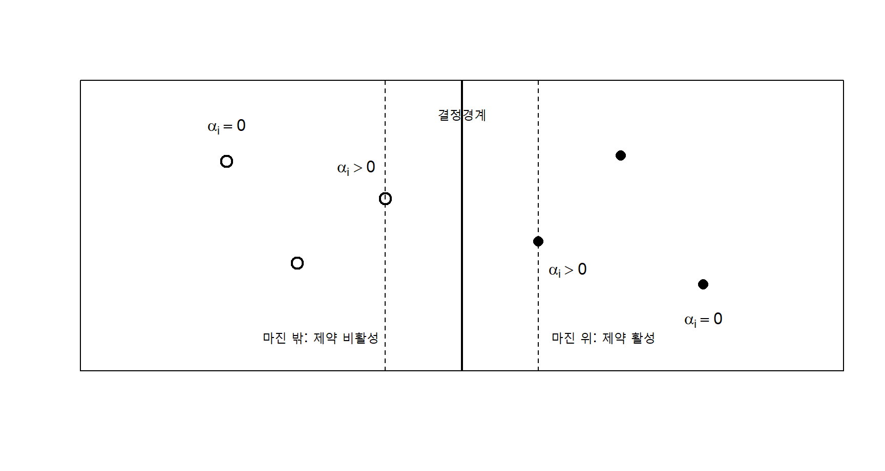
6.2.5 강한 쌍대성과 Slater 조건
원문제가 볼록이고 선형분리 가능한 자료에 대해 제약을 엄격하게 만족하는 점이 존재하면 Slater 조건(Slater condition)이 성립한다. 이때 원문제와 쌍대문제의 최적 목적함수값은 같다.
\[ p^\star=d^\star \tag{6.33}\]
강한 쌍대성(strong duality)은 쌍대문제를 풀어도 원문제와 같은 최적 분류기를 얻는다는 것을 보장한다. 선형분리가 불가능한 자료에서는 하드 마진 원문제가 실행불가능하지만, 소프트 마진(soft margin)을 도입하면 항상 실행가능한 문제로 확장할 수 있다.
6.2.6 절편의 계산
하드 마진에서 \(\alpha_i>0\)인 서포트 벡터는
\[ y_i(\mathbf w^\top\mathbf x_i+b)=1 \tag{6.34}\]
을 만족하므로
\[ b = y_i- \sum_{j=1}^{n}\alpha_j y_j\mathbf x_j^\top\mathbf x_i \tag{6.35}\]
로 계산할 수 있다. 수치오차를 줄이기 위해 여러 서포트 벡터에서 얻은 \(b\)를 평균하거나, 양·음 클래스의 경계값 사이 중간점을 사용할 수 있다.
6.2.7 쌍대표현의 판별함수
방정식 6.23을 판별함수에 대입하면
\[ f(\mathbf x) = \sum_{i=1}^{n} \alpha_i y_i \mathbf x_i^\top\mathbf x +b \tag{6.36}\]
가 된다. \(\alpha_i=0\)인 관측값은 계산에서 사라지므로 실제로는 서포트 벡터 집합 \(\mathcal S\)에 대해서만 합하면 된다.
\[ f(\mathbf x) = \sum_{i\in\mathcal S} \alpha_i y_i \mathbf x_i^\top\mathbf x +b \tag{6.37}\]
이 표현은 입력차원 \(p\)보다 서포트 벡터 수가 훨씬 작은 경우 효율적이다. 반대로 서포트 벡터가 매우 많으면 각 새 관측값의 예측에 많은 내적 계산이 필요하다.
6.2.8 Gram 행렬 표현
Gram 행렬(Gram matrix)을
\[ \mathbf K = \mathbf X\mathbf X^\top, \qquad K_{ij}=\mathbf x_i^\top\mathbf x_j \tag{6.38}\]
라고 하고 \(\mathbf Y=\operatorname{diag}(y_1,\ldots,y_n)\)라고 하자. 쌍대목적함수는
\[ W(\boldsymbol\alpha) = \mathbf 1^\top\boldsymbol\alpha - \frac12 \boldsymbol\alpha^\top \mathbf Y\mathbf K\mathbf Y \boldsymbol\alpha \tag{6.39}\]
로 쓸 수 있다. 훈련자료가 쌍대문제에 나타나는 방식은 Gram 행렬뿐이다. 따라서 내적을 적절한 커널함수로 바꾸면 명시적으로 고차원 특성을 계산하지 않고도 비선형 분류기를 만들 수 있다.
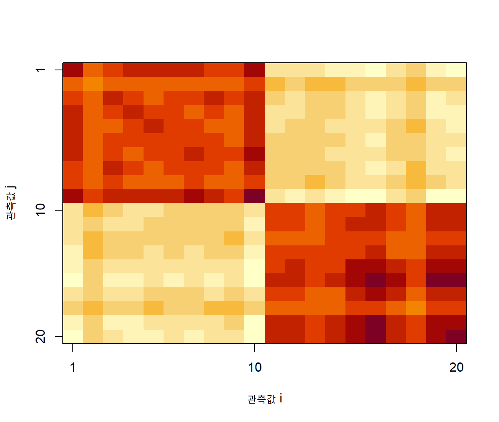
6.2.9 원문제와 쌍대문제의 계산 선택
선형 SVM에서 \(p\)가 작고 \(n\)이 매우 큰 경우에는 원문제 또는 직접적인 선형최적화가 유리할 수 있다. 반대로 \(n\)이 비교적 작고 \(p\)가 매우 크거나 커널을 사용해야 하는 경우에는 쌍대문제가 자연스럽다.
| 자료구조 | 일반적으로 유리한 접근 |
|---|---|
| \(n\gg p\), 선형분류 | 원문제, 확률적 최적화, 좌표하강 |
| \(p\gg n\), 선형분류 | 쌍대문제 또는 선형 대수 기반 방법 |
| 비선형 커널, 중간 규모 \(n\) | 쌍대문제 |
| 매우 큰 \(n\), 비선형 관계 | 근사 커널, 명시적 특성, 신경망·트리 앙상블 검토 |
6.2.10 순차 최소 최적화
쌍대문제는 등식제약
\[ \sum_i\alpha_i y_i=0 \tag{6.40}\]
때문에 하나의 \(\alpha_i\)만 독립적으로 변경할 수 없다. 순차 최소 최적화(sequential minimal optimization, SMO)는 매 반복에서 두 개의 승수만 선택하여 나머지를 고정한 채 작은 이차계획문제를 해석적으로 푼다.
SMO의 일반적 절차는 다음과 같다. 여기서 각 승수에 부과되는 구간 제한을 상자제약(box constraint)이라고 한다.
초기 alpha와 절편을 설정한다.
KKT 조건을 크게 위반하는 첫 번째 관측값을 선택한다.
목적함수를 충분히 개선할 두 번째 관측값을 선택한다.
두 alpha가 등식제약과 상자제약(box constraint)을 만족하도록 갱신한다.
절편과 오차 캐시를 갱신한다.
모든 관측값이 허용오차 안에서 KKT 조건을 만족할 때까지 반복한다.SMO는 전체 Hessian을 명시적으로 분해하지 않아도 되며, 희소한 최적해와 커널 캐시를 활용할 수 있다.
6.2.11 쌍대계수와 자료 영향
\(\alpha_i\)는 단순한 회귀계수와 다르다. 그 크기는 관측값이 결정경계에 미치는 기여를 나타내지만 입력 스케일, 커널, 규제모수와 다른 관측값에 의존한다. 따라서 \(\alpha_i\)만으로 변수효과나 관측값의 임상적 중요성을 직접 해석해서는 안 된다.
선형 SVM에서는
\[ \mathbf w = \sum_i\alpha_i y_i\mathbf x_i \tag{6.41}\]
를 통해 원특성 공간의 가중치를 복원할 수 있다. 그러나 특성 간 상관과 표준화 때문에 \(|w_j|\)를 곧바로 독립적 변수중요도로 해석하는 것은 위험하다.
6.2.12 표현정리와 커널 해
규제된 경험위험 최소화 문제가 재생커널 힐베르트 공간에서
\[ \min_{f\in\mathcal H_K} \left[ \sum_{i=1}^{n}L\{y_i,f(\mathbf x_i)\} + \lambda\|f\|_{\mathcal H_K}^2 \right] \tag{6.42}\]
형태를 갖는다면 최적해는
\[ f(\mathbf x) = \sum_{i=1}^{n}c_iK(\mathbf x_i,\mathbf x) \tag{6.43}\]
로 표현된다. 이를 표현정리(representer theorem)라고 한다. 무한차원 함수공간에서 최적화하더라도 해는 훈련관측값을 중심으로 한 유한개의 커널함수 조합으로 축약된다.
6.3 커널 함수(kernel function)
6.3.1 비선형 분류와 특성사상
원입력 공간에서 선형분리가 불가능한 자료도 적절한 비선형 변환을 적용한 특성공간(feature space)에서는 선형분리 가능할 수 있다. 특성사상(feature map)을
\[ \boldsymbol\phi: \mathcal X\rightarrow\mathcal F \tag{6.44}\]
라고 하자. 변환된 공간에서 선형 판별함수는
\[ f(\mathbf x) = \mathbf w^\top\boldsymbol\phi(\mathbf x)+b \tag{6.45}\]
이다. 원공간에서는 비선형 결정경계가 되지만 특성공간에서는 초평면이다.
예를 들어 일차원 입력 \(x\)를
\[ \boldsymbol\phi(x) = (x,x^2)^\top \tag{6.46}\]
로 변환하면 원공간에서 구간 형태의 분류규칙을 특성공간의 직선으로 표현할 수 있다.
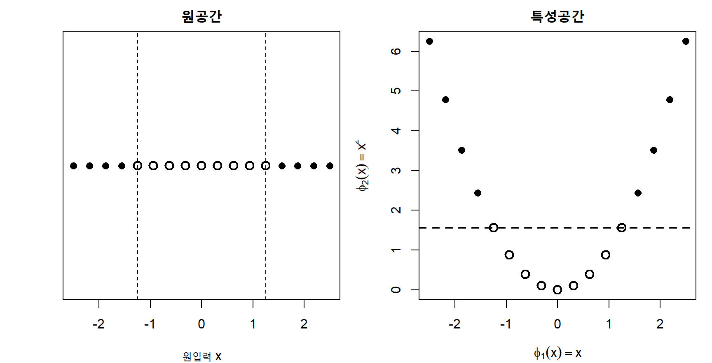
6.3.2 커널 트릭
쌍대문제에서는 변환된 특성벡터가 내적
\[ \boldsymbol\phi(\mathbf x_i)^\top \boldsymbol\phi(\mathbf x_j) \tag{6.47}\]
의 형태로만 나타난다. 이 내적을 직접 계산하는 대신 커널함수
\[ K(\mathbf x_i,\mathbf x_j) = \boldsymbol\phi(\mathbf x_i)^\top \boldsymbol\phi(\mathbf x_j) \tag{6.48}\]
를 계산하면 고차원 또는 무한차원 특성공간을 명시적으로 구성하지 않고도 같은 결과를 얻을 수 있다. 이를 커널 트릭이라고 한다.
커널 SVM의 쌍대문제는
\[ \begin{aligned} \max_{\boldsymbol\alpha}\quad & \sum_{i=1}^{n}\alpha_i - \frac12 \sum_{i=1}^{n}\sum_{j=1}^{n} \alpha_i\alpha_jy_iy_j K(\mathbf x_i,\mathbf x_j)\\ \text{subject to}\quad & \alpha_i\ge 0,\\ & \sum_{i=1}^{n}\alpha_i y_i=0 \end{aligned} \tag{6.49}\]
이고 판별함수는
\[ f(\mathbf x) = \sum_{i\in\mathcal S} \alpha_i y_iK(\mathbf x_i,\mathbf x) +b \tag{6.50}\]
이다.
6.3.3 유효한 커널과 양의 준정부호성
임의의 대칭함수가 모두 커널은 아니다. 훈련자료 \(\mathbf x_1,\ldots,\mathbf x_n\)에 대해 Gram 행렬
\[ K_{ij}=K(\mathbf x_i,\mathbf x_j) \tag{6.51}\]
이 모든 유한한 표본과 모든 \(\mathbf c\in\mathbb R^n\)에 대해
\[ \mathbf c^\top\mathbf K\mathbf c \ge 0 \tag{6.52}\]
을 만족하면 \(K\)는 양의 준정부호(positive semidefinite) 커널이다. 이 조건은 커널이 어떤 힐베르트 공간의 내적으로 표현될 수 있음을 보장한다.
수치적으로는 Gram 행렬의 고유값이 비음수인지 확인할 수 있다. 부동소수점 오차 때문에 매우 작은 음의 고유값이 나타날 수 있으나, 큰 음의 고유값은 커널 정의나 구현에 문제가 있음을 뜻한다.
6.3.4 Mercer 전개(Mercer expansion)의 관점
적절한 연속성과 적분조건 아래 대칭함수 \(K\)가 양의 준정부호이면 고유함수 전개
\[ K(\mathbf x,\mathbf z) = \sum_{m=1}^{\infty} \lambda_m \psi_m(\mathbf x) \psi_m(\mathbf z), \qquad \lambda_m\ge 0 \tag{6.53}\]
를 갖는다. 따라서 특성사상을
\[ \boldsymbol\phi(\mathbf x) = \left( \sqrt{\lambda_1}\psi_1(\mathbf x), \sqrt{\lambda_2}\psi_2(\mathbf x), \ldots \right)^\top \tag{6.54}\]
로 생각할 수 있다. 실제 커널 SVM에서는 이 무한차원 벡터를 직접 계산할 필요가 없다.
6.3.5 선형 커널
선형 커널(linear kernel)은
\[ K(\mathbf x,\mathbf z) = \mathbf x^\top\mathbf z \tag{6.55}\]
이다. 원특성 공간에서 선형경계를 학습한다. 고차원 희소자료, 텍스트 빈도자료, 유전자 발현자료처럼 \(p\)가 크고 선형구조가 충분한 경우 강력한 기준모형이 된다.
절편을 커널에 포함하려면
\[ K(\mathbf x,\mathbf z) = \mathbf x^\top\mathbf z+c \tag{6.56}\]
형태를 사용할 수 있지만 일반적으로 SVM 모형에 별도의 \(b\)가 포함되므로 단순 선형 커널을 사용한다.
6.3.6 다항 커널
다항 커널(polynomial kernel)은
\[ K(\mathbf x,\mathbf z) = (\gamma\mathbf x^\top\mathbf z+r)^d \tag{6.57}\]
로 정의한다. \(d\)는 차수, \(\gamma\)는 내적의 스케일, \(r\)은 상수항이다. \(d=2\)이면 주효과뿐 아니라 이차항과 두 변수 사이의 상호작용을 암묵적으로 포함한다.
예를 들어 \(\mathbf x=(x_1,x_2)^\top\)에 대해
\[ (1+\mathbf x^\top\mathbf z)^2 = 1+2x_1z_1+2x_2z_2+x_1^2z_1^2 +2x_1x_2z_1z_2+x_2^2z_2^2 \tag{6.58}\]
이므로 적절히 스케일된 특성사상은 상수, 일차항, 제곱항과 상호작용항을 포함한다.
차수 \(d\)가 커지면 복잡한 전역적 경계를 만들 수 있지만 입력 스케일과 매개변수에 매우 민감해진다.
6.3.7 가우시안 방사기저함수 커널(radial basis function kernel)
가우시안 커널(Gaussian kernel), 즉 RBF 커널은
\[ K(\mathbf x,\mathbf z) = \exp\left( -\gamma\|\mathbf x-\mathbf z\|_2^2 \right) \tag{6.59}\]
로 정의한다. 흔히
\[ \gamma = \frac{1}{2\sigma^2} \tag{6.60}\]
로 쓴다. 두 관측값이 가까우면 커널값이 1에 가깝고 멀어질수록 0에 가까워진다. RBF 커널은 무한차원 특성공간에 대응하며 국소적인 비선형 결정경계를 만들 수 있다.
\(\gamma\)가 작으면 넓은 범위의 관측값이 서로 유사한 것으로 간주되어 매우 매끄러운 경계를 만든다. \(\gamma\)가 크면 각 관측값의 영향범위가 좁아져 복잡하고 국소적인 경계를 만들 수 있다.
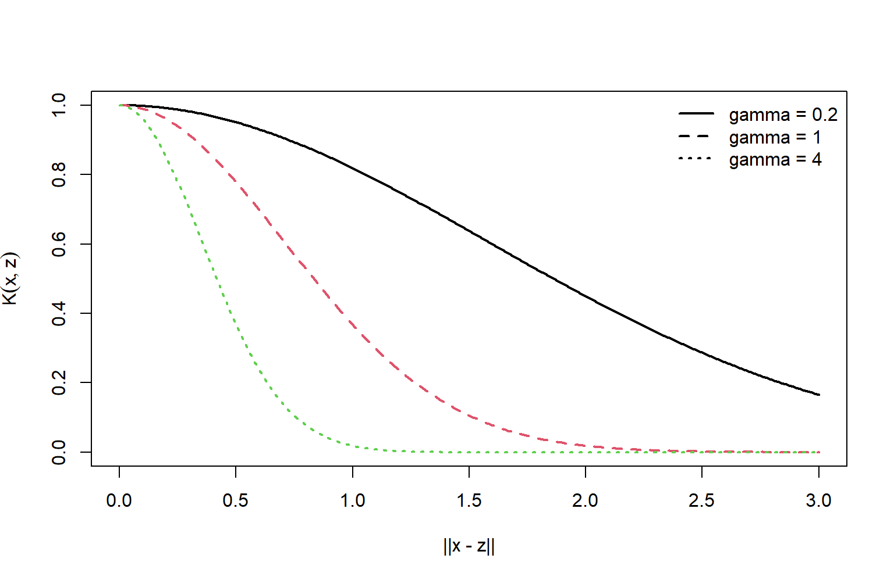
6.3.8 라플라스 커널
라플라스 커널(Laplacian kernel)은
\[ K(\mathbf x,\mathbf z) = \exp\left(-\gamma\|\mathbf x-\mathbf z\|_1\right) \tag{6.61}\]
로 정의할 수 있다. RBF 커널이 제곱 유클리드 거리를 사용하는 것과 달리 \(\ell_1\) 거리를 사용한다. 입력차원별 차이를 절댓값으로 합산하므로 특정 자료구조에서 강건한 유사도를 제공할 수 있다.
6.3.9 시그모이드 커널
시그모이드 커널(sigmoid kernel)은
\[ K(\mathbf x,\mathbf z) = \tanh(\gamma\mathbf x^\top\mathbf z+r) \tag{6.62}\]
이다. 신경망의 활성화와 유사하지만 모든 \(\gamma\)와 \(r\)에서 양의 준정부호가 되는 것은 아니다. 따라서 사용 전에 구현체의 허용조건과 Gram 행렬의 성질을 확인해야 한다.
6.3.10 문자열·그래프·집합 커널
커널은 유클리드 벡터에만 국한되지 않는다. 두 객체 사이의 유사도를 유효한 내적으로 설계할 수 있다면 다음과 같은 구조자료에도 적용할 수 있다.
- 문자열 커널(string kernel): 공통 부분문자열, n-gram 또는 부분수열 유사도
- 그래프 커널(graph kernel): 경로, 보행, 부분그래프 또는 Weisfeiler–Lehman 구조
- 트리 커널: 공통 부분트리
- 집합 커널: 원소쌍 커널의 합이나 평균
- 확률분포 커널: 분포 사이의 내적 또는 거리 변환
좋은 커널은 자료의 불변성, 대칭성, 국소성과 영역지식을 반영한다.
6.3.11 커널의 닫힘 성질
\(K_1\)과 \(K_2\)가 유효한 커널이고 \(a,b\ge0\)이면 다음 함수도 유효한 커널이다.
\[ K(\mathbf x,\mathbf z) = aK_1(\mathbf x,\mathbf z) +bK_2(\mathbf x,\mathbf z) \tag{6.63}\]
\[ K(\mathbf x,\mathbf z) = K_1(\mathbf x,\mathbf z) K_2(\mathbf x,\mathbf z) \tag{6.64}\]
또한 임의의 함수 \(g\)에 대해
\[ K(\mathbf x,\mathbf z) = g(\mathbf x)g(\mathbf z) \tag{6.65}\]
도 유효하다. 이 성질을 이용해 여러 자료원이나 변수군의 커널을 결합할 수 있다.
6.3.12 커널 중심화(kernel centering)
특성공간에서 평균을 제거하려면 커널 행렬을 중심화한다. \(\mathbf H=\mathbf I_n-\frac1n\mathbf 1\mathbf 1^\top\)라고 하면 중심화된 Gram 행렬은
\[ \mathbf K_c = \mathbf H\mathbf K\mathbf H \tag{6.66}\]
이다. 이는 커널 PCA(kernel principal component analysis)와 같은 비지도 커널방법에서 특히 중요하다. 시험관측값과 훈련관측값 사이의 커널도 훈련평균을 기준으로 일관되게 중심화해야 한다.
6.3.13 커널 정규화(kernel normalization)
관측값별 자기유사도 크기가 크게 다르면 다음과 같이 정규화할 수 있다.
\[ \widetilde K(\mathbf x,\mathbf z) = \frac{K(\mathbf x,\mathbf z)} {\sqrt{K(\mathbf x,\mathbf x)K(\mathbf z,\mathbf z)}} \tag{6.67}\]
이 정규화는 특성공간에서 두 벡터의 코사인 유사도에 해당한다. 다만 자기유사도가 0인 경우에는 사용할 수 없으며, 정규화가 항상 예측성능을 높이는 것은 아니다.
6.3.14 커널 유도거리(kernel-induced distance)
커널이 정의하는 특성공간의 거리제곱은
\[ \|\boldsymbol\phi(\mathbf x)-\boldsymbol\phi(\mathbf z)\|^2 = K(\mathbf x,\mathbf x) +K(\mathbf z,\mathbf z) -2K(\mathbf x,\mathbf z) \tag{6.68}\]
이다. 커널 선택은 단순히 비선형 함수를 선택하는 것이 아니라 자료 사이의 유사도와 거리를 재정의하는 것이다.
6.3.15 커널 하이퍼파라미터 선택
커널 종류와 매개변수는 가설공간을 결정한다. RBF SVM에서는 보통 \(C\)와 \(\gamma\)를 함께 선택해야 한다. 두 값은 강하게 상호작용한다.
- 큰 \(C\): 마진 위반을 강하게 벌하여 훈련자료에 더 밀착
- 작은 \(C\): 넓은 마진과 더 강한 규제
- 큰 \(\gamma\): 좁고 국소적인 커널, 복잡한 경계
- 작은 \(\gamma\): 넓고 매끄러운 커널, 단순한 경계
하이퍼파라미터 선택은 훈련·검증 과정 안에서 수행해야 하며 최종 시험자료를 반복적으로 사용하면 안 된다. 탐색범위는 보통 로그척도에서 구성한다.
\[ C\in\{2^{-5},2^{-3},\ldots,2^{15}\}, \qquad \gamma\in\{2^{-15},2^{-13},\ldots,2^3\} \tag{6.69}\]
이 격자는 예시일 뿐이며 특성 스케일, 표본크기와 자료구조에 따라 조정해야 한다.
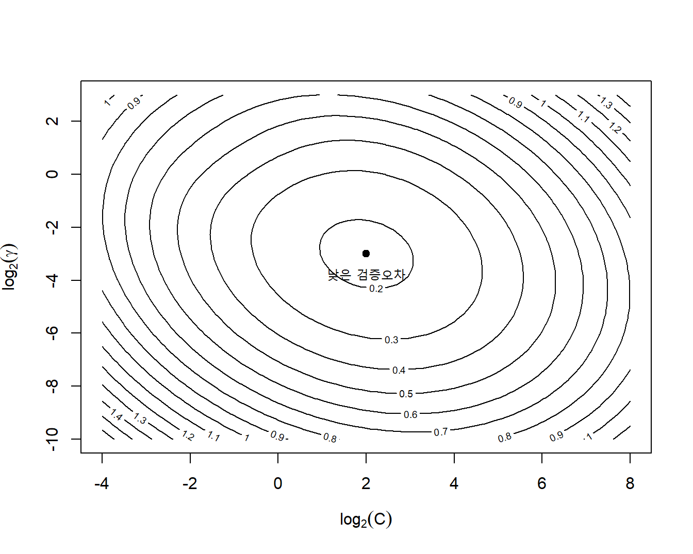
6.3.16 커널 선택의 실무 원칙
선형 커널을 항상 기준모형으로 포함하는 것이 좋다. 선형모형이 충분한 성능을 보이면 더 복잡한 커널의 계산비용과 해석부담을 피할 수 있다. 비선형성이 예상되면 RBF 커널이 일반적인 출발점이지만, 구조자료에서는 구조화 커널(structured kernel)처럼 영역에 맞는 커널이 더 적절할 수 있다.
경고커널 탐색과 데이터 누출
표준화, 변수선택, 결측대체, 커널 종류와 하이퍼파라미터 선택은 모두 교차검증의 각 훈련폴드 안에서 수행해야 한다. 전체 자료에서 전처리한 뒤 교차검증하면 검증폴드의 정보가 학습과정에 유입되어 성능이 낙관적으로 추정된다.
6.4 소프트 마진과 규제
6.4.1 선형분리가 불가능한 자료
현실 자료에서는 클래스가 겹치거나 이상치가 존재하기 때문에 모든 관측값을 완벽하게 분리하는 초평면이 존재하지 않는 경우가 많다. 설령 분리가 가능하더라도 하나의 이상치를 맞추기 위해 마진이 지나치게 좁아질 수 있다. 소프트 마진 SVM은 일부 관측값이 마진 안으로 들어오거나 잘못 분류되는 것을 허용한다.
각 관측값에 비음수 슬랙변수(slack variable) \(\xi_i\)를 도입하면 제약조건은
\[ y_i(\mathbf w^\top\mathbf x_i+b) \ge 1-\xi_i, \qquad \xi_i\ge0 \tag{6.70}\]
이 된다.
슬랙변수의 의미는 다음과 같다.
- \(\xi_i=0\): 올바른 쪽에서 마진 경계 바깥 또는 위
- \(0<\xi_i<1\): 올바르게 분류되지만 마진 내부
- \(\xi_i=1\): 결정경계 위
- \(\xi_i>1\): 잘못 분류됨
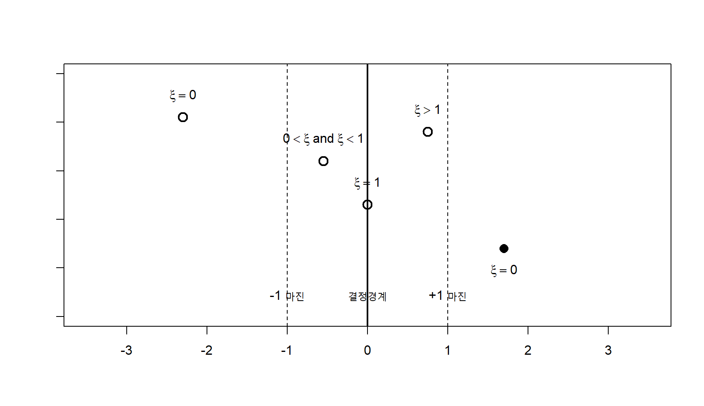
6.4.2 소프트 마진 원문제
소프트 마진 SVM은
\[ \begin{aligned} \min_{\mathbf w,b,\boldsymbol\xi}\quad & \frac12\|\mathbf w\|_2^2 + C\sum_{i=1}^{n}\xi_i\\ \text{subject to}\quad & y_i(\mathbf w^\top\mathbf x_i+b) \ge1-\xi_i,\\ &\xi_i\ge0, \qquad i=1,\ldots,n \end{aligned} \tag{6.71}\]
로 정의된다. 첫째 항은 마진을 넓게 만들고, 둘째 항은 마진 위반을 벌한다. \(C>0\)는 두 목표 사이의 균형을 조절한다.
\(C\)가 크면 훈련오류와 마진 위반에 큰 비용을 부과하여 복잡한 경계를 선택할 수 있다. \(C\)가 작으면 일부 위반을 허용하면서 \(\|\mathbf w\|_2\)가 작은 넓은 마진을 선호한다.
6.4.3 힌지 손실
주어진 \((\mathbf w,b)\)에서 제약을 만족하는 최소 슬랙은
\[ \xi_i = \max\left[0, 1-y_i(\mathbf w^\top\mathbf x_i+b) \right] \tag{6.72}\]
이다. 이를 원문제에 대입하면 제약 없는 목적함수
\[ \min_{\mathbf w,b} \left[ \frac12\|\mathbf w\|_2^2 + C\sum_{i=1}^{n} \max\{0,1-y_if(\mathbf x_i)\} \right] \tag{6.73}\]
를 얻는다. 함수
\[ L_{\mathrm{hinge}}(y,f) = \max(0,1-yf) \tag{6.74}\]
를 힌지 손실이라고 한다.
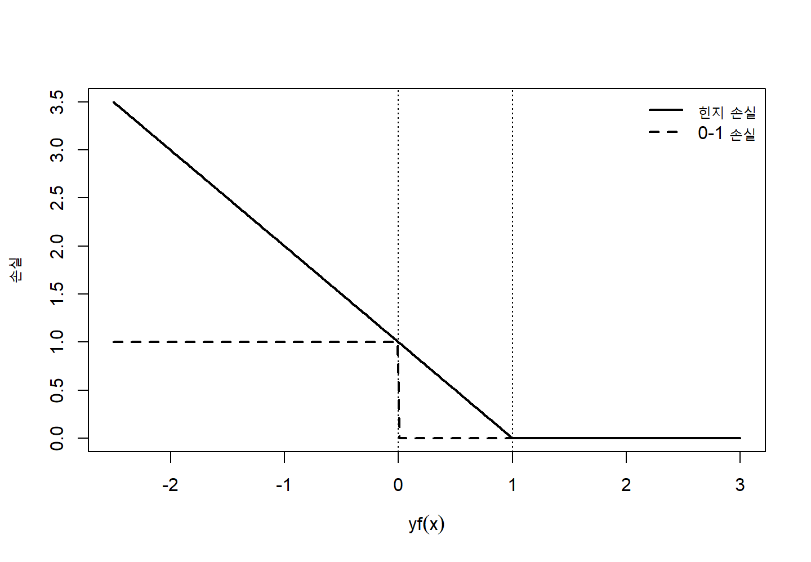
힌지 손실은 0-1 손실의 볼록 상계이다.
\[ I(yf\le0) \le \max(0,1-yf) \tag{6.75}\]
잘못 분류된 관측값뿐 아니라 올바르게 분류되더라도 마진 \(yf<1\)인 관측값에도 양의 손실을 부과한다. 반면 \(yf\ge1\)인 관측값은 손실이 0이다.
6.4.4 경험위험 최소화 표현
목적함수를 표본평균 형태로 쓰면
\[ \min_{\mathbf w,b} \left[ \frac{\lambda}{2}\|\mathbf w\|_2^2 + \frac1n\sum_{i=1}^{n} L_{\mathrm{hinge}} \{y_i,f(\mathbf x_i)\} \right] \tag{6.76}\]
로 나타낼 수 있다. 구현체에 따라 \(C\)와 \(\lambda\)의 정확한 대응은 표본합 또는 표본평균을 사용하는지에 따라 달라진다. 일반적으로 \(C\)가 클수록 규제가 약하고 \(\lambda\)가 클수록 규제가 강하다.
경고소프트웨어별 C의 정의
서로 다른 소프트웨어는 목적함수에 손실의 합, 평균 또는 클래스별 가중합을 사용할 수 있다. 따라서 같은 숫자의 \(C\)가 항상 같은 규제강도를 뜻하지 않는다. 표본크기가 달라지는 재표본화 분석에서는 구현체의 목적함수 정의를 확인해야 한다.
6.4.5 소프트 마진 쌍대문제
소프트 마진 라그랑지안에 슬랙의 비음수 제약에 대한 승수 \(\mu_i\ge0\)를 추가하면
\[ \begin{aligned} \mathcal L =& \frac12\|\mathbf w\|^2 +C\sum_i\xi_i + \sum_i\alpha_i \{1-\xi_i-y_i(\mathbf w^\top\mathbf x_i+b)\} - \sum_i\mu_i\xi_i. \end{aligned} \tag{6.77}\]
\(\xi_i\)에 대한 정상조건은
\[ C-\alpha_i-\mu_i=0 \tag{6.78}\]
이다. \(\mu_i\ge0\)이므로
\[ 0\le\alpha_i\le C \tag{6.79}\]
를 얻는다. 따라서 소프트 마진 쌍대문제는
\[ \begin{aligned} \max_{\boldsymbol\alpha}\quad & \sum_{i=1}^{n}\alpha_i - \frac12 \sum_{i=1}^{n}\sum_{j=1}^{n} \alpha_i\alpha_jy_iy_j K(\mathbf x_i,\mathbf x_j)\\ \text{subject to}\quad & 0\le\alpha_i\le C,\\ & \sum_{i=1}^{n}\alpha_i y_i=0 \end{aligned} \tag{6.80}\]
이다. 하드 마진과 달리 승수에 상한 \(C\)가 생긴다.
6.4.6 KKT 조건에 따른 관측값 구분
소프트 마진에서 \(\alpha_i\)의 값은 관측값의 위치와 연결된다.
\[ \begin{array}{lll} \alpha_i=0 &\Rightarrow& y_if(\mathbf x_i)\ge1,\\ 0<\alpha_i<C &\Rightarrow& y_if(\mathbf x_i)=1,\\ \alpha_i=C &\Rightarrow& y_if(\mathbf x_i)\le1. \end{array} \tag{6.81}\]
- \(\alpha_i=0\): 마진 밖의 비서포트 벡터
- \(0<\alpha_i<C\): 마진 경계 위의 자유 서포트 벡터
- \(\alpha_i=C\): 마진 내부 또는 오분류된 경계 서포트 벡터
절편은 일반적으로 \(0<\alpha_i<C\)인 서포트 벡터를 이용하여 계산한다.
6.4.7 C가 결정경계에 미치는 영향
\(C\)는 단순히 오분류 비용만 바꾸는 것이 아니라 마진폭, 서포트 벡터 수, 경계의 안정성과 훈련오류를 동시에 바꾼다.
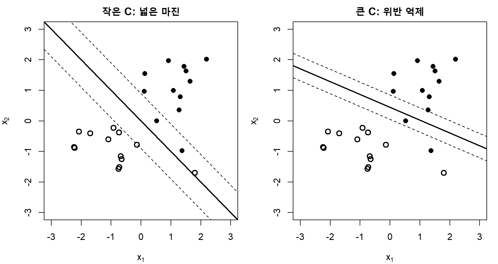
이 그림은 개념적 예시이다. 실제 경계는 자료와 최적화 결과에 의해 결정되며, 큰 \(C\)가 항상 낮은 시험오류를 보장하지 않는다.
6.4.8 제곱 힌지 손실
일부 선형 SVM 구현은 제곱 힌지 손실(squared hinge loss)
\[ L_{\mathrm{squared\ hinge}}(y,f) = \max(0,1-yf)^2 \tag{6.82}\]
을 사용한다. 이는 마진 위반이 큰 관측값을 더 강하게 벌하고 목적함수가 경계점 이외에서 더 매끄럽다. 그러나 이상치의 영향이 커질 수 있다.
\(\ell_1\) 소프트 마진이라는 표현은 보통 \(\sum_i\xi_i\)를, \(\ell_2\) 소프트 마진은 \(\sum_i\xi_i^2\)를 벌하는 경우를 뜻한다. 이는 가중치 \(\mathbf w\)에 대한 \(\ell_1\) 또는 \(\ell_2\) 규제와 구분해야 한다.
6.4.9 가중치의 \(\ell_1\) 규제와 희소 선형 SVM(sparse linear SVM)
변수선택이 필요한 경우 가중치에 \(\ell_1\) 규제를 사용할 수 있다.
\[ \min_{\mathbf w,b} \left[ \lambda\|\mathbf w\|_1 + \frac1n\sum_i L_{\mathrm{hinge}} \{y_i,\mathbf w^\top\mathbf x_i+b\} \right] \tag{6.83}\]
\(\ell_1\) 규제는 일부 \(w_j\)를 정확히 0으로 만들어 희소한 선형분류기를 만들 수 있다. 상관된 변수 중 일부만 선택할 수 있으므로 변수선택의 안정성을 재표본화로 평가해야 한다.
6.4.10 클래스 가중 SVM(class-weighted SVM)과 소프트 마진
비용민감 학습(cost-sensitive learning)의 한 형태로 클래스 불균형이나 오류비용의 비대칭성이 있을 때 관측값별 비용 \(C_i\)를 사용할 수 있다.
\[ \min_{\mathbf w,b,\boldsymbol\xi} \frac12\|\mathbf w\|^2 + \sum_{i=1}^{n}C_i\xi_i \tag{6.84}\]
예를 들어 양성 클래스의 거짓음성 비용이 높다면
\[ C_i = \begin{cases} C_+,&y_i=+1,\\ C_-,&y_i=-1, \end{cases} \qquad C_+>C_- \tag{6.85}\]
로 설정할 수 있다. 단순히 클래스 빈도의 역수를 사용하는 방법은 출발점일 뿐이며, 실제 의사결정 비용과 목표 민감도에 따라 검증해야 한다.
6.4.11 재표본화와 클래스 가중치
오버샘플링, 언더샘플링과 클래스 가중치는 서로 다른 방식으로 목적함수의 클래스 기여를 조정한다. 재표본화는 훈련자료의 경험분포를 바꾸고, 클래스 가중치는 관측값 손실의 비용을 바꾼다. 둘을 동시에 사용하면 효과가 중복될 수 있다.
평가자료의 클래스 비율은 실제 적용분포를 유지해야 한다. 훈련자료에서 비율을 조정했더라도 확률보정과 예측도 값은 목표 모집단의 유병률 또는 사건율을 기준으로 평가해야 한다.
6.4.12 SVM 점수와 확률
SVM의 판별값
\[ f(\mathbf x) = \sum_i\alpha_i y_iK(\mathbf x_i,\mathbf x)+b \tag{6.86}\]
은 결정경계까지의 방향성 있는 점수이지만 일반적으로 \(P(Y=1\mid\mathbf X=\mathbf x)\)가 아니다. 점수의 절댓값이 클수록 결정경계에서 멀다는 의미는 있으나, 서로 다른 모형이나 자료집합 사이에서 직접 비교 가능한 확률척도는 아니다.
확률이 필요하면 독립적인 보정자료 또는 교차검증의 out-of-fold 점수를 이용하여 보정모형을 적합한다.
6.4.13 Platt 보정
보정도 평가와 등위회귀를 포함한 일반적인 확률 보정은 섹션 2.3.10과 ?sec-ch17-calibration-uncertainty에서 다룬다.
Platt 보정(Platt scaling)은 SVM 점수 \(f\)에 로지스틱 함수를 적합한다.
\[ \widehat P(Y=1\mid f) = \frac{1}{1+\exp(Af+B)} \tag{6.87}\]
\(A\)와 \(B\)는 SVM을 학습하는 데 사용되지 않은 점수에서 추정해야 한다. 같은 훈련점수로 보정하면 과적합된 확률을 얻을 수 있다.
6.4.14 등위회귀 보정(isotonic calibration)
등위회귀는 점수와 사건확률 사이의 단조관계를 비모수적으로 추정한다.
\[ \widehat p_i = g(f_i), \qquad g\text{는 비감소 함수} \tag{6.88}\]
자료가 충분하면 유연하지만 작은 표본에서는 계단형 과적합이 발생할 수 있다. 보정방법도 내부 검증 또는 중첩 교차검증 안에서 선택해야 한다.
6.4.15 결정 임계값
기본 SVM 분류는 \(f(\mathbf x)=0\)을 임계값으로 사용하지만 특정 민감도, 특이도 또는 비용기준을 만족하려면
\[ \widehat y = I\{f(\mathbf x)\ge t\} \tag{6.89}\]
와 같이 \(t\)를 조정할 수 있다. 임계값은 시험자료가 아니라 검증자료에서 선택한다. 클래스 가중치, 확률보정과 임계값은 서로 다른 목적을 가진다.
- 클래스 가중치: 모형 학습과 결정경계 변경
- 확률보정: 점수를 확률척도로 변환
- 임계값 조정: 주어진 점수 또는 확률에서 행동규칙 선택
6.4.16 nu-SVM
\(\nu\)-SVM은 \(C\) 대신 \(\nu\in(0,1]\)를 사용하여 마진오류와 서포트 벡터 비율을 보다 직접적으로 조절한다. 한 가지 원문제는
\[ \begin{aligned} \min_{\mathbf w,b,\rho,\boldsymbol\xi}\quad & \frac12\|\mathbf w\|^2 - \nu\rho + \frac1n\sum_i\xi_i\\ \text{subject to}\quad & y_i(\mathbf w^\top\phi(\mathbf x_i)+b) \ge\rho-\xi_i,\\ &\xi_i\ge0, \qquad \rho\ge0 \end{aligned} \tag{6.90}\]
이다. 적절한 조건에서 \(\nu\)는 마진오류 비율의 상계이자 서포트 벡터 비율의 하계로 해석된다. 구현체마다 모수화가 다를 수 있으므로 정의를 확인해야 한다.
6.4.17 강건성과 이상치
힌지 손실은 제곱손실보다 큰 잔차의 증가가 선형이므로 일부 상황에서 더 강건하지만, \(C\)가 매우 크면 이상치를 맞추기 위해 경계가 크게 이동할 수 있다. RBF 커널에서 큰 \(\gamma\)와 큰 \(C\)를 함께 사용하면 개별 관측값 주위에 매우 국소적인 경계를 만들 수 있다.
이상치가 의심될 때는 다음을 점검한다.
- 입력오류와 라벨오류
- 표준화 전후의 특성분포
- 반복 교차검증에서 서포트 벡터 선택 안정성
- \(C\)와 \(\gamma\) 변화에 따른 성능과 서포트 벡터 수
- 영향력이 큰 관측값을 제외한 민감도 분석
6.4.18 소프트 마진의 통계적 해석
소프트 마진 SVM은 마진기반 대리손실과 함수복잡도 규제를 결합한 경험위험 최소화로 볼 수 있다. 힌지 손실은 분류오류를 직접 최소화하기 어려운 문제를 볼록최적화로 바꾼다. 그러나 대리손실의 최적화와 최종 적용목표가 일치하려면 평가척도, 클래스 비용과 분포를 함께 고려해야 한다.
6.5 서포트 벡터 회귀
6.5.1 회귀문제로의 확장
서포트 벡터 회귀(support vector regression, SVR)는 분류의 마진 개념을 회귀문제로 확장한다. 일반적인 회귀모형은 예측오차가 작을수록 더 좋은 것으로 평가하지만, SVR은 실제값과 예측값의 차이가 미리 정한 허용폭 \(\varepsilon\) 이내이면 손실을 0으로 둔다. 이 허용영역을 \(\varepsilon\)-튜브라고 한다.
선형 SVR의 예측함수는
\[ f(\mathbf x) = \mathbf w^\top\mathbf x+b \tag{6.91}\]
이다. 모든 관측값이 튜브 안에 있도록 하면서 \(\|\mathbf w\|_2\)를 최소화하면 평평한 함수를 얻는다.
6.5.2 epsilon-비감응 손실(epsilon-insensitive loss)
\(\varepsilon\)-비감응 손실은
\[ L_{\varepsilon}(y,f) = \max\{0,|y-f|-\varepsilon\} \tag{6.92}\]
로 정의한다. 오차의 절댓값이 \(\varepsilon\)보다 작거나 같으면 손실이 0이고, 그보다 크면 초과분만 손실로 계산한다.
\[ L_{\varepsilon}(y,f) = \begin{cases} 0, &|y-f|\le\varepsilon,\\ |y-f|-\varepsilon, &|y-f|>\varepsilon. \end{cases} \tag{6.93}\]
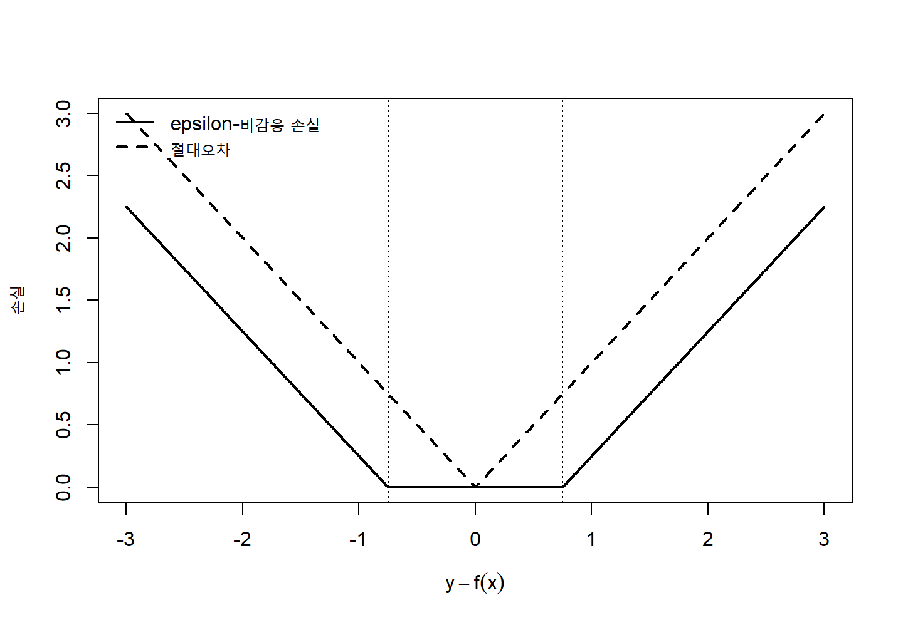
6.5.3 선형 SVR의 원문제
모든 관측값을 튜브 안에 넣을 수 없는 경우 위쪽 위반을 위한 \(\xi_i\)와 아래쪽 위반을 위한 \(\xi_i^\star\)를 도입한다.
\[ \begin{aligned} \min_{\mathbf w,b,\boldsymbol\xi,\boldsymbol\xi^\star} \quad & \frac12\|\mathbf w\|_2^2 + C\sum_{i=1}^{n}(\xi_i+\xi_i^\star)\\ \text{subject to}\quad & y_i-(\mathbf w^\top\mathbf x_i+b) \le\varepsilon+\xi_i,\\ & (\mathbf w^\top\mathbf x_i+b)-y_i \le\varepsilon+\xi_i^\star,\\ & \xi_i\ge0, \qquad \xi_i^\star\ge0. \end{aligned} \tag{6.94}\]
첫째 제약은 실제값이 예측값보다 너무 큰 경우를, 둘째 제약은 예측값이 실제값보다 너무 큰 경우를 제어한다.
제약 없는 형태는
\[ \min_{\mathbf w,b} \left[ \frac12\|\mathbf w\|_2^2 + C\sum_{i=1}^{n} L_{\varepsilon} \{y_i,f(\mathbf x_i)\} \right] \tag{6.95}\]
이다.
6.5.4 epsilon-튜브(epsilon tube)의 기하학
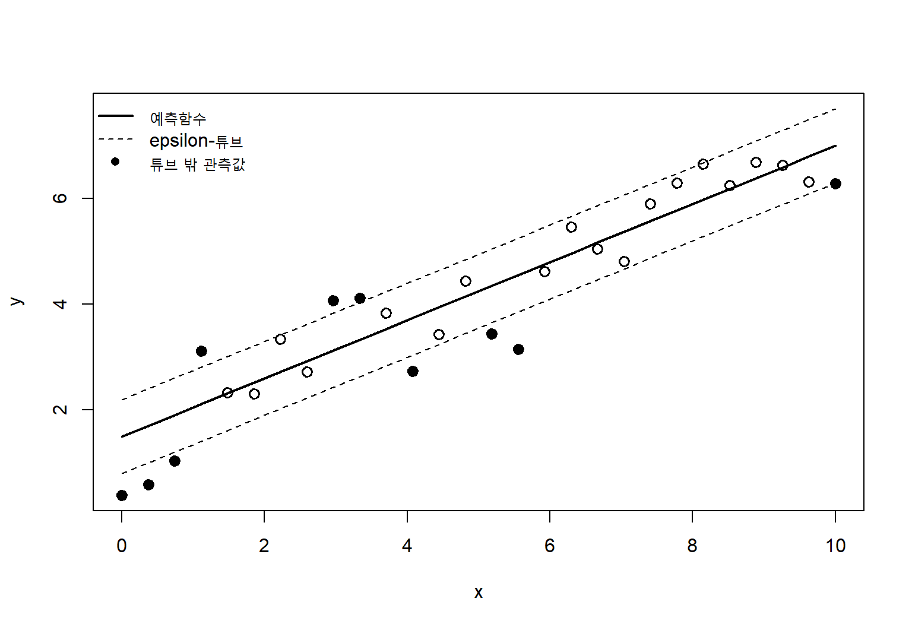
튜브 내부 관측값은 최적해에 직접 기여하지 않을 수 있다. 튜브 경계 위 또는 밖에 있는 관측값이 서포트 벡터가 된다. 따라서 \(\varepsilon\)이 커질수록 일반적으로 서포트 벡터 수가 줄어들고 모형이 더 희소해진다.
6.5.5 SVR 쌍대문제
두 종류의 제약에 대응하는 라그랑주 승수를 각각 \(\alpha_i\)와 \(\alpha_i^\star\)라고 하면
\[ \mathbf w = \sum_{i=1}^{n} (\alpha_i-\alpha_i^\star)\mathbf x_i \tag{6.96}\]
를 얻는다. 커널을 포함한 쌍대문제는
\[ \begin{aligned} \max_{\boldsymbol\alpha,\boldsymbol\alpha^\star} \, & - rac12 \sum_{i=1}^{n}\sum_{j=1}^{n} (\alpha_i-\alpha_i^\star) (\alpha_j-\alpha_j^\star) K(\mathbf x_i,\mathbf x_j)\\ & - \varepsilon\sum_{i=1}^{n}(\alpha_i+\alpha_i^\star) + \sum_{i=1}^{n}y_i(\alpha_i-\alpha_i^\star)\\ \text{subject to}\, & \sum_{i=1}^{n}(\alpha_i-\alpha_i^\star)=0,\\ & 0\le\alpha_i\le C, \qquad 0\le\alpha_i^\star\le C. \end{aligned} \tag{6.97}\]
예측함수는
\[ f(\mathbf x) = \sum_{i=1}^{n} (\alpha_i-\alpha_i^\star) K(\mathbf x_i,\mathbf x) +b \tag{6.98}\]
이다. \(\alpha_i-\alpha_i^\star=0\)인 관측값은 예측함수에서 사라진다.
6.5.6 KKT 조건과 회귀 서포트 벡터
SVR의 KKT 조건에 따르면 다음 관계가 성립한다.
- 튜브 내부: \(\alpha_i=\alpha_i^\star=0\)
- 위쪽 튜브 경계: \(0<\alpha_i<C\)
- 아래쪽 튜브 경계: \(0<\alpha_i^\star<C\)
- 튜브 밖 위쪽: \(\alpha_i=C\)
- 튜브 밖 아래쪽: \(\alpha_i^\star=C\)
튜브 경계에 있는 자유 서포트 벡터를 이용하여 절편 \(b\)를 계산할 수 있다.
6.5.7 C, epsilon과 gamma의 역할
SVR에서는 최소 세 가지 하이퍼파라미터가 서로 상호작용한다.
| 하이퍼파라미터 | 작은 값 | 큰 값 |
|---|---|---|
| \(C\) | 튜브 위반을 더 허용, 강한 규제 | 위반 억제, 자료에 더 밀착 |
| \(\varepsilon\) | 좁은 튜브, 많은 서포트 벡터 | 넓은 튜브, 희소한 해 |
| \(\gamma\) | 매끄러운 RBF 함수 | 국소적이고 복잡한 함수 |
\(\varepsilon\)은 반응변수의 단위에 의존하므로 반응변수의 스케일과 측정오차 수준을 고려해야 한다. \(y\)를 표준화했다면 예측 후 원단위로 되돌려야 한다.
6.5.8 epsilon의 선택
\(\varepsilon\)은 관측오차 또는 실질적으로 무시할 수 있는 예측오차와 연결할 수 있다. 너무 작으면 거의 모든 관측값이 서포트 벡터가 되어 모형이 복잡하고 계산비용이 커진다. 너무 크면 중요한 구조를 무시하고 과소적합할 수 있다.
교차검증에서 예측오차만 비교하지 말고 다음도 함께 확인한다.
- 서포트 벡터 비율
- 잔차분포
- 입력공간의 영역별 편향
- 반응변수 범위별 오차
- \(C\)와 \(\gamma\) 변화에 대한 민감도
6.5.9 nu-SVR
\(\nu\)-SVR은 \(\varepsilon\)을 직접 고정하는 대신 \(\nu\)를 통해 튜브 폭과 서포트 벡터 비율을 제어한다. 한 가지 형태는
\[ \begin{aligned} \min_{\mathbf w,b,\varepsilon,\boldsymbol\xi,\boldsymbol\xi^\star} \quad & \frac12\|\mathbf w\|^2 +C\left[ \nu\varepsilon + \frac1n\sum_i(\xi_i+\xi_i^\star) \right]\\ \text{subject to} \quad & y_i-f(\mathbf x_i)\le\varepsilon+\xi_i,\\ &f(\mathbf x_i)-y_i\le\varepsilon+\xi_i^\star,\\ &\xi_i,\xi_i^\star,\varepsilon\ge0. \end{aligned} \tag{6.99}\]
\(\nu\)는 특정 조건에서 튜브 밖 오류 비율의 상계와 서포트 벡터 비율의 하계에 관련된다.
6.5.10 SVR과 강건회귀
\(\varepsilon\)-비감응 손실은 튜브 밖에서 선형으로 증가하므로 제곱오차보다 큰 잔차의 영향을 줄일 수 있다. 그러나 \(C\)가 크면 이상치가 여전히 큰 영향력을 가질 수 있다. 반응변수의 극단값이 중요한 신호인지 자료오류인지 구분해야 한다.
Huber 손실과 비교하면 두 손실의 구조는 다르다. Huber 손실은 작은 잔차를 제곱으로, 큰 잔차를 선형으로 벌한다. \(\varepsilon\)-비감응 손실은 작은 잔차에 손실을 전혀 부과하지 않고 튜브 밖에서 선형으로 증가한다.
6.5.11 SVR의 평가
SVR은 일반 회귀모형과 동일하게 독립자료에서 평가한다. 대표적 척도는 다음과 같다.
\[ \operatorname{MAE} = \frac1n\sum_{i=1}^{n}|y_i-\widehat y_i| \tag{6.100}\]
\[ \operatorname{RMSE} = \sqrt{ \frac1n\sum_{i=1}^{n}(y_i-\widehat y_i)^2 } \tag{6.101}\]
\[ R^2 = 1- \frac{\sum_i(y_i-\widehat y_i)^2} {\sum_i(y_i-\bar y)^2} \tag{6.102}\]
\(\varepsilon\)-손실 자체를 검증척도로 사용할 수도 있지만, 적용목표의 실제 비용과 연결된 척도를 우선해야 한다. 예측구간이 필요한 경우 표준 SVR 점예측만으로는 충분하지 않으며 별도의 불확실성 추정방법이 필요하다.
6.5.12 불확실성 추정
기본 SVR은 조건부 평균이나 중앙값의 명시적 확률모형을 제공하지 않는다. 예측구간을 얻기 위해 다음 방법을 고려할 수 있다.
- 부트스트랩을 이용한 예측분포
- 컨포멀 예측을 이용한 분포비의존적 구간
- 분위수 손실과 커널방법의 결합
- 잔차분포를 별도로 모형화
- 가우시안 과정 회귀와 비교
불확실성 방법은 자료교환가능성, 이분산성과 분포이동 가정에 따라 성질이 달라진다.
6.6 커널 기법
6.6.1 커널방법의 공통 구조
커널 SVM은 커널방법의 한 예이다. 많은 커널방법은 함수 \(f\)를 재생커널 힐베르트 공간 \(\mathcal H_K\)에서 찾고
\[ \widehat f = \arg\min_{f\in\mathcal H_K} \left[ \frac1n\sum_{i=1}^{n}L\{y_i,f(\mathbf x_i)\} + \lambda\|f\|_{\mathcal H_K}^2 \right] \tag{6.103}\]
를 최소화한다. 손실함수 \(L\)을 바꾸면 분류, 회귀, 순위학습과 이상치 탐지로 확장된다.
표현정리에 따라 최적해는
\[ \widehat f(\mathbf x) = \sum_{i=1}^{n}c_iK(\mathbf x_i,\mathbf x) \tag{6.104}\]
형태를 갖는다.
6.6.2 재생커널 힐베르트 공간
재생커널 힐베르트 공간(reproducing kernel Hilbert space, RKHS)은 함수들의 힐베르트 공간으로, 각 \(\mathbf x\)에 대해 \(K(\mathbf x,\cdot)\)가 공간에 포함되고 재생성질(reproducing property)
\[ f(\mathbf x) = \langle f,K(\mathbf x,\cdot)\rangle_{\mathcal H_K} \tag{6.105}\]
을 만족한다. 이 성질에서 코시–슈바르츠 부등식을 적용하면
\[ |f(\mathbf x)| \le \|f\|_{\mathcal H_K} \sqrt{K(\mathbf x,\mathbf x)} \tag{6.106}\]
을 얻는다. RKHS 노름은 함수의 크기와 복잡도를 제어하는 역할을 한다.
RBF 커널의 RKHS 노름은 단순한 미분항 하나로 해석되지는 않지만, 큰 노름은 일반적으로 더 복잡하고 급격하게 변하는 함수를 허용한다.
6.6.3 커널 릿지 회귀
커널 릿지 회귀(kernel ridge regression)는 제곱손실과 RKHS 규제를 결합한다.
\[ \widehat f = \arg\min_{f\in\mathcal H_K} \left[ \sum_{i=1}^{n} \{y_i-f(\mathbf x_i)\}^2 + \lambda\|f\|_{\mathcal H_K}^2 \right] \tag{6.107}\]
\(\mathbf f=\mathbf K\mathbf c\)이고 \(\|f\|_{\mathcal H_K}^2=\mathbf c^\top\mathbf K\mathbf c\)이므로
\[ \widehat{\mathbf c} = (\mathbf K+\lambda\mathbf I_n)^{-1}\mathbf y \tag{6.108}\]
를 얻는다. 새 관측값의 예측은
\[ \widehat f(\mathbf x) = \mathbf k(\mathbf x)^\top (\mathbf K+\lambda\mathbf I_n)^{-1}\mathbf y \tag{6.109}\]
이다. 여기서
\[ \mathbf k(\mathbf x) = \{K(\mathbf x_1,\mathbf x),\ldots,K(\mathbf x_n,\mathbf x)\}^\top \tag{6.110}\]
이다.
커널 릿지는 모든 관측값이 일반적으로 0이 아닌 계수를 갖는 반면, SVR은 \(\varepsilon\)-손실 때문에 희소한 해를 만들 수 있다.
6.6.4 커널 로지스틱 회귀
커널 로지스틱 회귀(kernel logistic regression)는
\[ P(Y=1\mid\mathbf x) = \sigma\{f(\mathbf x)\} \tag{6.111}\]
와 로그손실을 사용한다.
\[ \min_{f\in\mathcal H_K} \left[ - \sum_{i=1}^{n} \left y_i\log p_i+(1-y_i)\log(1-p_i) \right] + \frac\lambda2\|f\|_{\mathcal H_K}^2 \right] \tag{6.112}\]
표현정리에 따라 \(f(\mathbf x)=\sum_i c_iK(\mathbf x_i,\mathbf x)\)로 쓸 수 있다. SVM과 달리 확률모형을 직접 학습하지만 일반적으로 해가 희소하지 않고 반복최적화가 필요하다.
6.6.5 커널 PCA
주성분분석을 비선형 특성공간에서 수행하면 커널 PCA가 된다. 중심화된 커널 행렬 \(\mathbf K_c\)의 고유값 문제
\[ \mathbf K_c\mathbf v_m = \lambda_m\mathbf v_m \tag{6.113}\]
를 푼다. 훈련관측값 \(i\)의 \(m\)번째 커널 주성분 점수는 적절한 정규화 아래
\[ z_{im} = \sqrt{\lambda_m}\,v_{im} \tag{6.114}\]
로 표현할 수 있다. 새 관측값의 투영에는 훈련자료 기준으로 중심화된 커널벡터가 필요하다.
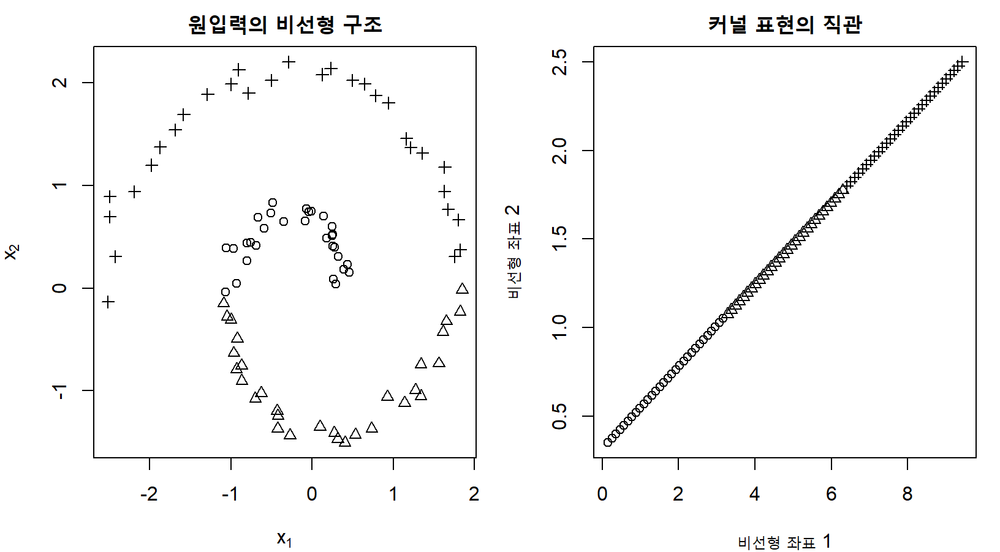
6.6.6 커널 판별분석
선형 판별분석의 클래스 간 산포와 클래스 내 산포를 특성공간에서 정의하면 커널 판별분석(kernel discriminant analysis)으로 확장할 수 있다. 계산은 커널 행렬로 표현되며 비선형 분류경계를 얻는다. 클래스 내 산포행렬이 특이해지기 쉬우므로 규제가 필요하다.
6.6.7 일클래스 SVM
일클래스 SVM(one-class SVM)은 정상자료만 또는 대부분 정상인 자료에서 정상영역의 경계를 학습하여 이상치를 탐지한다. 특성공간에서 원점과 자료를 분리하는 초평면을 찾는 한 가지 원문제는
\[ \begin{aligned} \min_{\mathbf w,\rho,\boldsymbol\xi}\quad & \frac12\|\mathbf w\|^2 + \frac{1}{\nu n} \sum_{i=1}^{n}\xi_i - \rho\\ \text{subject to}\quad & \mathbf w^\top\phi(\mathbf x_i) \ge\rho-\xi_i,\\ & \xi_i\ge0. \end{aligned} \tag{6.115}\]
판별함수는
\[ f(\mathbf x) = \operatorname{sign} \left[ \sum_i\alpha_iK(\mathbf x_i,\mathbf x)-\rho \right] \tag{6.116}\]
이다. \(\nu\)는 이상치 허용비율과 서포트 벡터 비율을 조절한다. 정상자료가 실제 적용환경을 충분히 대표하지 않으면 정상적인 새로운 패턴을 이상치로 잘못 판단할 수 있다.
6.6.8 최소영역 설명과 SVDD
서포트 벡터 자료설명(support vector data description, SVDD)은 특성공간에서 자료를 포함하는 최소 반지름 구를 찾는다.
\[ \begin{aligned} \min_{R,\mathbf a,\boldsymbol\xi} \, &R^2+C\sum_i\xi_i\\ \text{subject to} \, & \|\phi(\mathbf x_i)-\mathbf a\|^2 \le R^2+\xi_i,\\ &\xi_i\ge0. \end{aligned} \tag{6.117}\]
새 관측값이 학습된 구 바깥에 있으면 이상치로 판단한다. 이동불변 커널에서는 일클래스 SVM과 밀접한 관계가 있다.
6.6.9 커널 정렬
커널이 목표변수 구조와 얼마나 일치하는지 측정하기 위해 커널 정렬(kernel alignment)을 사용할 수 있다. 중심화된 입력커널 \(\mathbf K_c\)와 레이블커널 \(\mathbf L_c\)에 대해
\[ A(\mathbf K,\mathbf L) = \frac{\langle\mathbf K_c,\mathbf L_c\rangle_F} {\|\mathbf K_c\|_F\|\mathbf L_c\|_F} \tag{6.118}\]
로 정의한다. 여기서 \(\langle\mathbf A,\mathbf B\rangle_F=\operatorname{tr}(\mathbf A^\top\mathbf B)\)이다. 정렬은 커널 선택의 보조정보를 제공하지만 같은 자료에서 반복적으로 최적화하면 과적합될 수 있다.
6.6.10 다중 커널 학습
서로 다른 변수군이나 자료원에 대해 커널 \(K_1,\ldots,K_M\)을 만든 뒤
\[ K(\mathbf x,\mathbf z) = \sum_{m=1}^{M}\eta_mK_m(\mathbf x,\mathbf z), \qquad \eta_m\ge0 \tag{6.119}\]
로 결합할 수 있다. 다중 커널 학습(multiple kernel learning)은 예측모형과 커널 가중치 \(\eta_m\)를 함께 추정한다. 유전체, 영상, 임상자료처럼 서로 다른 자료유형을 통합할 때 유용하다.
6.6.11 커널과 가우시안 과정
같은 커널함수는 가우시안 과정(Gaussian process)에서도 공분산함수로 사용된다.
\[ f\sim\mathcal{GP}\{m(\mathbf x),K(\mathbf x,\mathbf z)\} \tag{6.120}\]
커널 SVM은 마진과 힌지 손실을 이용한 규제최적화 관점이고, 가우시안 과정은 함수에 대한 확률분포와 사후추론의 관점이다. 두 방법은 같은 유사도 구조를 사용할 수 있지만 예측불확실성과 학습목표가 다르다.
6.6.12 커널 계산의 복잡도
정확한 커널방법은 일반적으로 \(n\times n\) Gram 행렬을 저장해야 하므로 메모리가
\[ O(n^2) \tag{6.121}\]
필요하다. 일반적인 이차계획 또는 행렬분해의 시간복잡도는 문제구조와 알고리즘에 따라 대략
\[ O(n^2)\text{에서 }O(n^3) \tag{6.122}\]
범위가 될 수 있다. 따라서 표본이 매우 크면 정확한 커널방법이 병목이 된다.
6.6.13 Nyström 근사
Nyström 방법은 \(m\ll n\)개의 대표관측값을 선택하여 커널 행렬을 저랭크로 근사한다. 선택된 열에 대한 행렬을 \(\mathbf C\in\mathbb R^{n\times m}\), 선택된 부분행렬을 \(\mathbf W\in\mathbb R^{m\times m}\)라고 하면
\[ \mathbf K \approx \mathbf C\mathbf W^{\dagger}\mathbf C^\top \tag{6.123}\]
이다. \(\mathbf W^{\dagger}\)는 일반화 역행렬이다. 대표점 선택은 단순 무작위, k-means 중심, 레버리지 점수 등을 사용할 수 있다.
6.6.14 랜덤 푸리에 특성
이동불변 커널은 Bochner 정리를 이용하여 무작위 명시적 특성으로 근사할 수 있다. RBF 커널의 경우
\[ \mathbf z(\mathbf x) = \sqrt{\frac{2}{D}} \left[ \cos(\boldsymbol\omega_1^\top\mathbf x+b_1), \ldots, \cos(\boldsymbol\omega_D^\top\mathbf x+b_D) \right]^\top \tag{6.124}\]
를 구성하여
\[ K(\mathbf x,\mathbf z) \approx \mathbf z(\mathbf x)^\top\mathbf z(\mathbf z) \tag{6.125}\]
로 근사한다. RBF 커널에서는 \(\boldsymbol\omega_d\)를 적절한 정규분포에서, \(b_d\)를 \([0,2\pi]\)의 균등분포에서 추출한다. 그다음 명시적 \(D\)차원 특성에 선형 SVM을 적합할 수 있다.
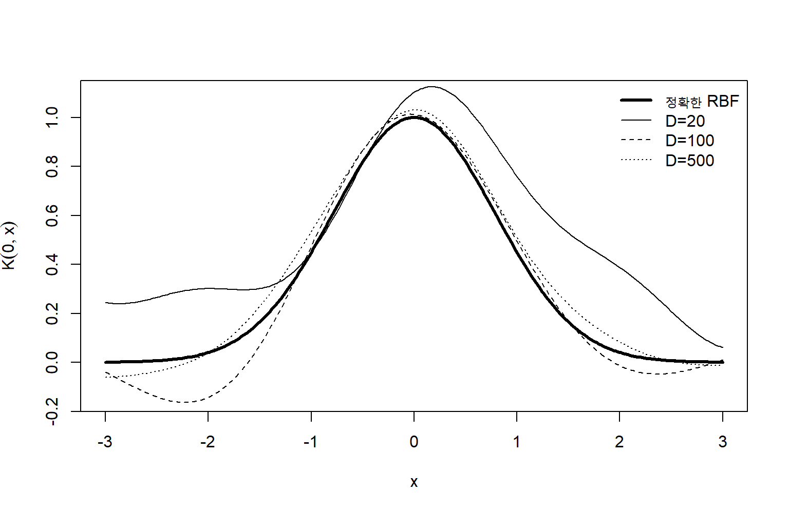
6.6.15 불완전 Cholesky 분해
양의 준정부호 Gram 행렬은
\[ \mathbf K \approx \mathbf G\mathbf G^\top, \qquad \mathbf G\in\mathbb R^{n\times m} \tag{6.126}\]
형태의 저랭크 분해로 근사할 수 있다. 잔차 대각원소가 큰 열을 순차적으로 선택하면 필요한 랭크까지 근사할 수 있다.
6.6.16 대규모 선형 SVM
텍스트나 희소 고차원 자료에서는 비선형 커널보다 선형 SVM이 계산과 성능 면에서 더 적절할 수 있다. 원문제의 힌지손실 또는 쌍대문제를 좌표하강, 확률적 경사법, 절단평면법으로 최적화할 수 있다. 희소행렬을 유지하면 메모리와 계산량을 크게 줄일 수 있다.
6.6.17 커널방법의 장점
커널방법의 장점은 다음과 같다.
- 볼록최적화로 전역 최적해를 구할 수 있음
- 작은·중간 표본에서 강력한 비선형 모형을 제공
- 내적 또는 유사도 설계를 통해 구조자료를 처리
- 규제와 함수공간 이론이 명확함
- SVM에서는 서포트 벡터를 통한 희소표현 가능
- 고차원 자료에서 선형 커널이 강력한 기준모형이 됨
6.6.18 커널방법의 한계
- 정확한 Gram 행렬의 \(O(n^2)\) 메모리 부담
- 커널과 하이퍼파라미터 선택에 민감함
- 입력 스케일과 거리집중의 영향을 크게 받음
- 비선형 커널의 직접적 해석이 어려움
- 서포트 벡터가 많으면 예측이 느림
- 기본 SVM 점수는 확률이 아님
- 매우 큰 비정형 자료에서는 표현학습 모형보다 불리할 수 있음
- 결측값을 직접 처리하지 못하는 구현이 많음
6.6.19 SVM 분석의 실무 절차
SVM 분석은 다음 순서로 진행하는 것이 안전하다.
예측목표와 오류비용을 정의한다.
자료분할 단위와 최종 시험자료를 확정한다.
훈련폴드 안에서 결측대체와 표준화를 수행한다.
선형 모형과 선형 SVM을 기준모형으로 적합한다.
비선형성이 필요한 경우 RBF 또는 영역특화 커널을 검토한다.
C, gamma, epsilon을 로그척도에서 공동 탐색한다.
중첩 교차검증으로 선택과 평가를 분리한다.
성능뿐 아니라 서포트 벡터 수와 안정성을 확인한다.
확률이 필요하면 out-of-fold 점수로 보정한다.
검증자료에서 적용 임계값을 선택한다.
최종 시험자료와 외부자료에서 한 번 평가한다.
분포이동과 계산비용을 배포 후 모니터링한다.6.6.20 선형 SVM과 로지스틱 회귀의 비교
두 방법 모두 선형 점수 \(\mathbf w^\top\mathbf x+b\)를 사용할 수 있지만 손실과 출력해석이 다르다.
| 구분 | 선형 SVM | 로지스틱 회귀 |
|---|---|---|
| 대표 손실 | 힌지 손실 | 로그손실 |
| 학습 초점 | 마진과 경계 근처 관측값 | 모든 관측값의 조건부 확률 |
| 기본 출력 | 판별점수와 클래스 | 확률 |
| 희소한 관측값 표현 | 쌍대해에서 가능 | 일반적으로 아님 |
| 완전분리 | 최대 마진 해 존재 | 비규제 MLE 발산 가능 |
| 확률보정 | 별도 보정 필요 | 모형이 맞으면 직접 가능 |
| 비선형 확장 | 커널 SVM | 커널 로지스틱 회귀 |
어느 방법이 우월한지는 자료와 평가목표에 따라 달라진다. 순위와 분류경계가 중요하면 SVM이, 확률추정과 계수해석이 중요하면 규제 로지스틱 회귀가 더 자연스러울 수 있다.
6.6.21 SVM과 신경망의 비교
커널 SVM은 커널이 표현을 미리 정의하고 볼록최적화로 출력층을 학습한다. 신경망은 다층 구조에서 표현 자체를 자료로부터 학습하지만 비볼록최적화가 필요하다.
| 구분 | 커널 SVM | 신경망 |
|---|---|---|
| 표현 | 커널로 사전 정의 | 층별로 학습 |
| 최적화 | 볼록 | 일반적으로 비볼록 |
| 표본규모 | 작은·중간 규모에 강점 | 대규모 자료와 전이학습에 강점 |
| 계산병목 | Gram 행렬 | 반복 순전파·역전파 |
| 구조자료 | 영역특화 커널 필요 | CNN, RNN, Transformer 등 |
| 불확실성 | 기본적으로 제공하지 않음 | 기본적으로 제공하지 않음 |
6.6.22 모형 해석
선형 SVM에서는 표준화된 특성의 \(w_j\) 부호와 크기를 결정점수와 연결할 수 있다. 그러나 상관된 특성, 규제와 클래스 가중치 때문에 인과효과로 해석할 수 없다.
비선형 커널에서는 다음 방법을 사용할 수 있다.
- 변수 하나를 변화시킨 판별점수 곡선
- 부분의존도와 ICE
- 순열 중요도
- 국소 대리모형
- 반사실적 입력 탐색
- 서포트 벡터와 유사한 사례 제시
해석방법 자체도 조건부 상관, 외삽과 분포이동에 민감하므로 적용범위를 명시해야 한다.
6.6.23 민감도와 안정성
SVM 결과는 다음 요소에 민감할 수 있다.
- 특성 표준화 방법
- 이상치와 라벨오류
- 커널 종류
- \(C\), \(\gamma\), \(\varepsilon\)
- 클래스 가중치
- 자료분할과 무작위성
- 중복 또는 거의 동일한 관측값
반복 교차검증에서 성능분포, 선택된 하이퍼파라미터, 서포트 벡터 비율과 선형 가중치의 변동을 함께 보고하면 모형의 안정성을 더 잘 이해할 수 있다.
6.6.24 분포이동과 외삽
RBF 커널은 훈련자료에서 멀리 떨어진 새 관측값과의 커널값이 거의 0이 된다. 이 경우 판별함수는 절편이나 일부 전역구조에 의존하며 신뢰하기 어려울 수 있다. SVR도 훈련범위 밖에서 자연스러운 선형 추세를 자동으로 유지하지 않는다.
따라서 적용 시 다음을 확인한다.
- 새 관측값과 훈련자료 사이의 거리
- 커널 유사도의 최대값과 분포
- 특성별 범위 초과
- 시간·기관·집단별 성능변화
- 보정도와 임계값의 변화
6.6.25 결측자료 처리
대부분의 SVM 구현은 결측값을 직접 처리하지 못한다. 결측대체는 교차검증의 훈련폴드 안에서 수행해야 한다. 결측 자체가 정보를 가진다면 결측지시자를 추가할 수 있지만, 대체값과 지시자의 조합이 임상적 또는 운영적 의미를 갖는지 검토해야 한다.
6.6.26 재현성과 보고
SVM 분석을 보고할 때 최소한 다음을 명시한다.
- 입력변수와 전처리
- 훈련·검증·시험자료의 분할단위
- 커널 종류와 수식
- \(C\), \(\gamma\), \(\varepsilon\) 및 클래스 가중치
- 하이퍼파라미터 탐색범위와 선택방법
- 교차검증 반복수와 층화·군집 구조
- 서포트 벡터 수 또는 비율
- 확률보정과 임계값 선택방법
- 최종 성능과 불확실성
- 사용 소프트웨어와 버전
장 요약
서포트 벡터 머신은 두 클래스 사이의 마진을 최대화하는 분류기이다. 선형 판별함수의 결정경계는 \(\mathbf w^\top\mathbf x+b=0\)인 초평면이며, 점에서 초평면까지의 거리는 판별값을 \(\|\mathbf w\|_2\)로 나누어 계산한다. 함수적 마진은 분류의 부호와 여유를 나타내지만 스케일에 의존하고, 기하학적 마진은 스케일에 불변이다.
선형분리 가능한 자료의 하드 마진 SVM은 \(\frac12\|\mathbf w\|^2\)를 최소화하면서 모든 관측값이 \(y_if(\mathbf x_i)\ge1\)을 만족하도록 한다. 마진 경계 위의 관측값이 서포트 벡터이며, 이들이 최적 결정경계를 규정한다. 마진 밖의 관측값은 최적해의 쌍대계수가 0이 될 수 있다.
라그랑지안과 KKT 조건을 이용하면 SVM의 쌍대문제를 유도할 수 있다. 최적 가중치벡터는 \(\mathbf w=\sum_i\alpha_i y_i\mathbf x_i\)로 표현되고, 쌍대목적함수에는 관측값 사이의 내적만 나타난다. 상보성 조건은 양의 쌍대계수를 갖는 관측값과 서포트 벡터의 관계를 설명한다.
커널 트릭은 특성공간의 내적을 커널함수로 계산하여 고차원 변환을 명시적으로 구성하지 않고 비선형 결정경계를 학습한다. 유효한 커널은 모든 유한한 표본에 대해 양의 준정부호 Gram 행렬을 만들어야 한다. 선형, 다항, RBF와 라플라스 커널은 서로 다른 유사도와 귀납적 편향을 정의한다.
RBF 커널에서 \(\gamma\)는 관측값 영향의 공간적 범위를 조절한다. 작은 \(\gamma\)는 매끄러운 전역적 경계를, 큰 \(\gamma\)는 국소적이고 복잡한 경계를 만든다. 커널 종류와 매개변수는 가설공간 자체를 바꾸므로 \(C\)와 함께 중첩 교차검증 안에서 선택해야 한다.
소프트 마진 SVM은 슬랙변수를 도입하여 마진 위반과 오분류를 허용한다. 목적함수는 마진을 넓히는 \(\|\mathbf w\|^2\) 항과 위반을 벌하는 힌지 손실을 결합한다. \(C\)가 크면 훈련위반을 강하게 억제하고, 작으면 넓은 마진과 강한 규제를 선호한다.
힌지 손실은 0-1 손실의 볼록 상계이며 잘못 분류된 관측값뿐 아니라 마진 내부의 관측값에도 손실을 부과한다. 소프트 마진의 쌍대계수는 \(0\le\alpha_i\le C\)를 만족한다. \(\alpha_i=0\)인 관측값은 마진 밖, \(0<\alpha_i<C\)인 관측값은 마진 위, \(\alpha_i=C\)인 관측값은 마진 내부 또는 오분류 관측값에 대응한다.
클래스 불균형과 비대칭 비용은 클래스별 \(C\) 또는 관측값별 가중치를 통해 반영할 수 있다. 그러나 클래스 가중치, 재표본화, 확률보정과 결정 임계값은 서로 다른 역할을 한다. SVM의 판별점수는 확률이 아니므로 확률이 필요하면 out-of-fold 점수를 이용한 Platt 보정이나 등위회귀를 적용해야 한다.
서포트 벡터 회귀는 \(\varepsilon\)-비감응 손실을 사용한다. 실제값과 예측값의 오차가 \(\varepsilon\) 이내이면 손실을 0으로 두고, 튜브 밖 초과분만 벌한다. \(C\)는 튜브 위반 비용, \(\varepsilon\)은 무시할 오차폭, \(\gamma\)는 비선형 함수의 국소성을 조절한다.
SVR의 쌍대해는 \((\alpha_i-\alpha_i^\star)\)가 0이 아닌 관측값만 예측함수에 포함하므로 희소할 수 있다. 튜브 내부의 관측값은 일반적으로 서포트 벡터가 아니다. 점예측의 평가에는 MAE, RMSE와 \(R^2\)를 사용할 수 있으나 기본 SVR은 예측구간을 직접 제공하지 않는다.
커널 릿지 회귀, 커널 로지스틱 회귀, 커널 PCA, 일클래스 SVM과 SVDD는 같은 커널 원리를 서로 다른 손실과 목표에 적용한다. 재생커널 힐베르트 공간의 표현정리는 무한차원 함수공간의 최적해가 훈련관측값 중심 커널의 유한 선형결합으로 표현됨을 보장한다.
정확한 커널방법은 \(n\times n\) Gram 행렬 때문에 대규모 표본에서 계산부담이 크다. Nyström 근사(Nyström approximation), 랜덤 푸리에 특성(random Fourier features), 불완전 Cholesky 분해(incomplete Cholesky decomposition)를 이용하면 저차원 명시적 표현으로 근사할 수 있다. 고차원 희소자료에서는 대규모 선형 SVM이 더 효율적일 수 있다.
SVM의 성공적인 적용에는 표준화, 누출 없는 검증, 커널과 하이퍼파라미터의 공동선택, 서포트 벡터 수와 안정성 확인, 확률보정과 외부검증이 필요하다. 비선형 커널은 유연하지만 외삽과 분포이동에 취약할 수 있으므로 새 관측값과 훈련자료 사이의 유사도를 함께 모니터링해야 한다.